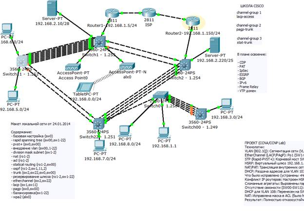

Проект: Отказоустойчивая мультисервисная сеть предприятия (Cisco CCNA/CCNP R&S Lab)
Среда моделирования: Cisco Packet Tracer 6.2
Ключевые реализованные технологии:
| Что проверяем | Команда / Действие | Результат |
|---|---|---|
| BGP-соседство | show ip bgp summary на ISP/R1 | Established |
| OSPF-соседство | show ip ospf neighbor на SW1/SW2 | FULL |
| Redistribution | show ip route на SW1 | O IA и O E2 |
| HSRP | show standby brief на R1/R2 | R1 Active, R2 Standby |
| Связность с интернетом | ping 8.8.8.8 с ПК | 100% успех |
speed/duplex. Решение: жестко задали speed 100 и duplex full на всех портах.
Схема сети Advanced Enterprise (загружена из папки lab2-report.files).
hostname ISP
ipv6 unicast-routing
! --- БЛОК 1: ИНТЕРФЕЙСЫ (IPv4 + IPv6) ---
interface FastEthernet0/0
ip address 10.0.0.1 255.255.255.252
ipv6 address 2001:DB8:10::1/64
no shutdown
interface FastEthernet0/1
ip address 10.0.1.1 255.255.255.252
ipv6 address 2001:DB8:20::1/64
no shutdown
interface Loopback0
ip address 8.8.8.8 255.255.255.255
ipv6 address 2001:DB8:88::8/128
! --- БЛОК 2: BGP (Маршрутизация) ---
router bgp 65001
neighbor 10.0.0.2 remote-as 65002
neighbor 10.0.1.2 remote-as 65002
network 8.8.8.8 mask 255.255.255.255hostname Router1
ipv6 unicast-routing
! --- БЛОК 1: ИНТЕРФЕЙСЫ И HSRP ---
interface FastEthernet0/0
description TO_SW1
ip address 192.168.1.5 255.255.255.0
ipv6 address 2001:DB8:1::5/64
ip nat inside
! HSRP (R1 - Active)
standby 1 ip 192.168.1.2
standby 1 priority 150
standby 1 preempt
interface FastEthernet0/1
description TO_ISP
ip address 10.0.0.2 255.255.255.252
ipv6 address 2001:DB8:10::2/64
ip nat outside
! --- БЛОК 2: МАРШРУТИЗАЦИЯ (OSPF + BGP) ---
router ospf 1
router-id 1.1.1.1
network 192.168.1.0 0.0.0.255 area 0
default-information originate
router bgp 65002
neighbor 10.0.0.1 remote-as 65001
network 192.168.1.0 mask 255.255.255.0
network 192.168.2.0 mask 255.255.255.0
network 192.168.5.0 mask 255.255.255.0
! --- БЛОК 3: NAT/PAT (Выход в интернет) ---
ip access-list extended NAT
permit ip 192.168.0.0 0.0.255.255 any
ip nat inside source list NAT interface FastEthernet0/1 overloadhostname Router2
ipv6 unicast-routing
! --- БЛОК 1: ИНТЕРФЕЙСЫ И HSRP ---
interface FastEthernet0/0
description TO_SW2
ip address 192.168.1.150 255.255.255.0
ipv6 address 2001:DB8:1::150/64
ip nat inside
! HSRP (R2 - Standby)
standby 1 ip 192.168.1.2
standby 1 preempt
interface FastEthernet0/1
description TO_ISP
ip address 10.0.1.2 255.255.255.252
ipv6 address 2001:DB8:20::2/64
ip nat outside
! --- БЛОК 2: МАРШРУТИЗАЦИЯ (EIGRP + BGP) ---
router eigrp 100
network 192.168.1.0
no auto-summary
router bgp 65002
neighbor 10.0.1.1 remote-as 65001
network 192.168.1.0 mask 255.255.255.0hostname Switch1
ip routing
ipv6 unicast-routing
! --- БЛОК 1: STP (Балансировка) ---
spanning-tree mode rapid-pvst
spanning-tree vlan 1,100,102,104 root primary
! --- БЛОК 2: ETHERCHANNEL (LACP) ---
interface range f0/2, f0/4, f0/6, f0/8-13
channel-group 1 mode active
switchport trunk encapsulation dot1q
switchport mode trunk
speed 100
duplex full
interface port-channel 1
switchport trunk encapsulation dot1q
switchport mode trunk
! --- БЛОК 3: OSPF MULTI-AREA (ABR) ---
interface Vlan1
ip address 192.168.1.253 255.255.255.0
ipv6 address 2001:DB8:1::253/64
ipv6 ospf 1 area 0
router ospf 1111
router-id 3.3.3.3
network 192.168.1.0 0.0.0.255 area 0
network 192.168.2.0 0.0.0.15 area 0
network 192.168.4.0 0.0.0.255 area 0
network 192.168.5.0 0.0.0.255 area 1
! --- БЛОК 4: ИСПРАВЛЕНИЕ БАГА HSRP (Транзитный маршрут) ---
ip route 0.0.0.0 0.0.0.0 192.168.1.5hostname Switch2
ip routing
ipv6 unicast-routing
! --- БЛОК 1: STP ---
spanning-tree mode rapid-pvst
spanning-tree vlan 1,105,106,107,108 root primary
! --- БЛОК 2: ETHERCHANNEL ---
interface range f0/2, f0/5, f0/8, f0/9
channel-group 3 mode active
switchport trunk encapsulation dot1q
switchport mode trunk
speed 100
duplex full
interface port-channel 3
switchport trunk encapsulation dot1q
switchport mode trunk
! --- БЛОК 3: МАРШРУТИЗАЦИЯ И REDISTRIBUTION ---
interface Vlan1
ip address 192.168.1.254 255.255.255.0
ipv6 address 2001:DB8:1::254/64
router ospf 1222
router-id 2.2.2.2
network 192.168.1.0 0.0.0.255 area 0
network 192.168.0.0 0.0.0.255 area 0
network 192.168.7.0 0.0.0.255 area 2
network 192.168.8.0 0.0.0.255 area 2
redistribute eigrp 100 subnets
router eigrp 100
network 192.168.1.0
redistribute ospf 1222 metric 10000 100 255 1 1500! Switch11 (Area 1)
hostname Switch11
ip routing
spanning-tree mode rapid-pvst
interface range f0/1, f0/6-13
channel-group 1 mode active
switchport trunk encapsulation dot1q
switchport mode trunk
speed 100
duplex full
interface Vlan1
ip address 192.168.1.252 255.255.255.0
interface Vlan105
ip address 192.168.5.254 255.255.255.0
interface Vlan106
ip address 192.168.6.254 255.255.255.0
router ospf 1333
network 192.168.1.0 0.0.0.255 area 1
network 192.168.5.0 0.0.0.255 area 1
network 192.168.6.0 0.0.0.255 area 1
! Switch22 (Area 2)
hostname Switch22
ip routing
spanning-tree mode rapid-pvst
interface range f0/1, f0/6-8
channel-group 3 mode active
switchport trunk encapsulation dot1q
switchport mode trunk
speed 100
duplex full
interface Vlan1
ip address 192.168.1.251 255.255.255.0
interface Vlan107
no ip address
interface Vlan108
no ip address
router ospf 1444
network 192.168.1.0 0.0.0.255 area 2
network 192.168.7.0 0.0.0.255 area 2
network 192.168.8.0 0.0.0.255 area 2! Switch0
hostname Switch0
spanning-tree mode pvst
interface range f0/3-5
description pagp-trunk
no shutdown
channel-group 2 mode auto
switchport mode trunk
speed 100
duplex full
interface Port-channel 2
switchport mode trunk
interface Vlan1
ip address 192.168.1.250 255.255.255.0
no shutdown
ip default-gateway 192.168.1.254
interface f0/10
switchport mode access
switchport access vlan 108
spanning-tree portfast
! Switch00
hostname Switch00
ip routing
spanning-tree mode pvst
interface range f0/2-5
channel-group 2 mode desirable
switchport trunk encapsulation dot1q
switchport mode trunk
interface Vlan1
ip address 192.168.1.249 255.255.255.0
ip route 0.0.0.0 0.0.0.0 192.168.1.253
ip dhcp pool vlan108
network 192.168.8.0 255.255.255.0
default-router 192.168.8.254Цель: Убедиться, что все L3-устройства обмениваются маршрутами и видят друг друга.
show ip ospf neighbor, show ip route ospf.FULL. В таблице маршрутизации есть маршруты с метками O и O IA.ping 192.168.3.254 (шлюз SW00). Ожидается !!!!!.Цель: Проверить, что граничные роутеры установили BGP-сессию с ISP и получают маршруты.
show ip bgp summary.Established. На R1: сосед 10.0.0.1 в статусе Established.Цель: Доказать, что маршруты из EIGRP попадают в OSPF и наоборот.
show ip route.D. Перераспределенные в OSPF маршруты имеют метку O E2. На SW1: маршруты из EIGRP (через SW2) имеют метку O E2.Цель: Проверить, что при отказе R1 трафик перехватывает R2.
show standby brief.Active, R2 — Standby.shutdown на Fa0/0. На R2 статус меняется на Active. С ПК ping 192.168.1.2 идет без потерь.Цель: Убедиться, что внутренние клиенты выходят в интернет.
ping 8.8.8.8. На R1: show ip nat translations.icmp с внутренним IP ПК и внешним IP (10.0.0.2).Цель: Проверить, что LACP и PAgP собрали каналы.
show etherchannel summary.(SU), а порты в скобках (P).Цель: Доказать, что STP выбрал корневые мосты и заблокировал резервные линки.
show spanning-tree vlan 1.Altn BLK.Цель: Проверить защиту портов на SW0.
show ip dhcp snooping, show port-security interface f0/10.Secure-up.ping. Порт должен уйти в err-disabled.Цель: Проверить двухстековую маршрутизацию.
ping ipv6 2001:DB8:1::254 (SW2).!!!!!.| № | Технология | Команда | Результат |
|---|---|---|---|
| 1 | OSPF Multi-Area | show ip ospf neighbor | Соседи FULL |
| 2 | BGP | show ip bgp summary | Established |
| 3 | Redistribution | show ip route | Метки O E2, D |
| 4 | HSRP | show standby brief | R1 Active, R2 Standby |
| 5 | NAT | show ip nat translations | Записи есть |
| 6 | EtherChannel | show etherchannel summary | SU, порты P |
| 7 | STP | show spanning-tree vlan 1 | Root Bridge |
| 8 | Port Security | Смена MAC на ПК | err-disabled |
| 9 | IPv6 | ping ipv6 | !!!!! |
Этот протокол — финальное доказательство. Теперь у вас есть сеть, конфиги и тесты. Портфолио готово.